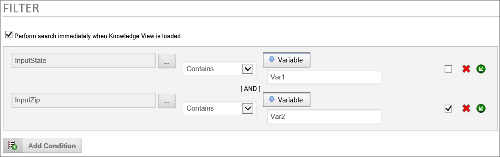
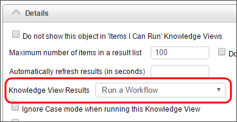
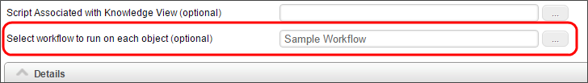
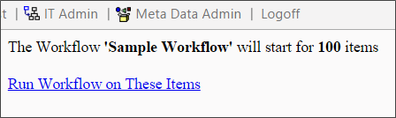
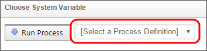
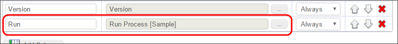
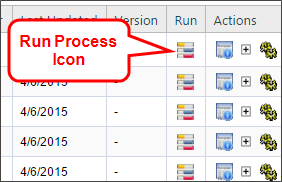

|
|
Lesson Contents | In this Lesson, you will learn how to export Knowledge Views to CSV, and to an Excel template. |
The default behavior of a Knowledge View is to display the result list in the browser. For more detailed analysis, though, you may need to export the Knowledge View into a more accessible format, so, Knowledge View results can be exported to a CSV file (which can be opened by Excel). If you have the Office Integration component, you can export directly to Excel, and use Excel templates to modify or style the exported file.
When exporting to either CSV or Excel, exported Date/Time fields will contain both the date and the time.
To export the results to a CSV file select the Show Export to CSV Icon check box in the Knowledge View definition's Options tab. Doing so will display an export icon at the upper right corner of the Knowledge View. This option is selected by default when a new Knowledge View is created.

There are two options when exporting the results to a CSV file. First you can set the Knowledge View Results property to "Displayed in Grid", which is the default option. Second, you can set the Knowledge View Results property to "Exported to CSV", which will automatically save the data to a file on your local computer.
If you want to prompt the user for additional filter data on this Knowledge View when running the report, choose the option "Displayed in Grid" to allow the user to click on the icon to export the results after the filter data is entered.

Additionally, selecting the Export all Form Fields to CSV option will export all form data, regardless of what is defined on the columns. When this option is selected, all form fields will be exported after the defined columns. This will also cause the default display options for the columns to export only (only the first column will appear on the screen).

The results of the Knowledge View can also be streamed to an Excel Report Template and have a report run automatically. This will result in Excel opening and running a report based on the data just retrieved from the server.
For users of Process Director installations containing the Office Integration component, the results of a Knowledge View can also be streamed to an Excel Report Template to run a report automatically. This will result in Excel opening and running a report based on the data just retrieved from the server.
To allow the exporting of Knowledge View result to an Excel file, check the Show Export to Excel Icon checkbox in the Options tab of the Knowledge View Properties, then click the Update button to see more Excel options.

Before a Knowledge View can be exported to an Excel file, an Excel template file located inside the content list must be linked to the knowledge view. To link to an Excel template file, set the Select Excel Template field in the knowledge view options.
Knowledge Views can immediately export their results to an Excel file when opened. To activate this option, select the “Export to Excel” option in the Knowledge View Results dropdown in the Knowledge View properties.

If the “Displayed in Grid” option is selected, then the Knowledge View results will display in the browser, along with an icon button giving the user the option to export the results to an Excel file.
The Excel Template Report file defines how the data in a Knowledge View will be displayed in an Excel report.
Apply formatting to the columns in the Template Excel file such as date/time and number formatting, using the Format Cells command in Excel.

In the template XLS document, you will place Smart Markers where you want the results of the Knowledge View to be imported. The smart markers take this format:
&=BP.col1
&=BP.col2
Where col1 and col2 are the names of the Knowledge View columns. For example, the image below defines 3 columns in a template XLS sheet.

These columns will be filled with the corresponding columns (Contract Date, Customer, Customer Type) in the Knowledge View. The Column Names defined in the Smart Markers must match exactly the columns defined in the Knowledge View. All column names in the template file should add BP. to the variable.
You can also place formulas in columns using the following syntax:

If you define a range in the Excel template that includes the header columns, and the template columns, the range will automatically be expanded as results are inserted into the spreadsheet.

The XLS template file can contain Pivot tables or Excel formulas that can be automatically run against the data. Create the Pivot Table against a RANGE name that encompasses the template and header column. When the Knowledge View is run, it will stream (export) the results into the RANGE specified. The number of rows will be expanded automatically to accommodate the number of records returned from the Knowledge View.
To automatically run a Pivot Table, ensure that the option is selected in Excel that indicates the Pivot Table Report should run when loaded (i.e. Refresh on open).
Also, when using a Pivot table, ensure that the XLS file you upload in to the Content List was saved with the Pivot Table Graph as the sheet that is displayed. When the XLS file is saved, it will open with the same sheet displayed.
You can include special columns in the Excel output range which will automatically be filled in when the report is delivered to the user. You do not need to include these columns in the Knowledge View Definition.

| COLUMN |
DESCRIPTION |
|---|---|
BP_KV_NAME
|
The Name of the Knowledge View Definition. |
BP_KV_DESC
|
The Description of the Knowledge View Definition. |
BP_ROW_SECOND
|
The value of the "second line" configured for this Knowledge View of the current row. This can be used like any other column name. |
BP_FILTER_1
|
The value of the first filter criteria (if any) in the Knowledge View Definition |
BP_FILTER_2
|
The value of the second filter criteria (if any) in the Knowledge View Definition, etc. |
BP_KV_CURR_USER
|
The name of the current user |
BP_KV_CURR_USER_EMAIL
|
The email of the current user |
BP_KV_CURR_DATETIME
|
The datetime this excel file was generated |
Formulas must be formatted according to a specific syntax when create an excel report template.
The characters “&=&=” must precede any formula. The excel report template equation for “1 + 1” would then be as follows:
&=&=1+1
The character sequence “{r}” represents the current row number. To display the current row number in a cell, one would use the following formula:
&=&={r}
One can also access rows other than that which a cell belongs to. For example, the access the previous row, one could put the following formula into a cell:
&=&={-1}
To return the value of a specific cell, you would use the format “Column_Name{Row_Number}”. So, to display the value of column B in this row, one would use the following formula:
&=&=A{-1}
The string (numeric) after a formula will convert the value into a number. So, if you were to want to display this column as a number, you would use this formula:
&=BP.MyColumn(numeric)
These components can be combined in any way to create a formula. For example, if I wanted to add one to the product of the previous row number and the value of column b in this row, I could use this formula:
&=&={-1} * B{r} + 1
A Knowledge View is represented by a URL that can be displayed outside of the BP Logix environment. The URL for a Knowledge View can be sent in an email, displayed in a web portal, or added to an existing web site. The URL for an individual Knowledge View is as follows:
http://server_name/kv.aspx?ext=1&id=NN
Where server_name is the hostname of BP Logix and NN is the internal ID displayed in the Knowledge View definition you want to use (e.g. KVID=ea1f7d30-2c44-4971-ac8a-4654ae2521ff).
The Knowledge View can be opened using a URL that is placed on a web site. If the Knowledge View is configured with Filter, you can pass this filter information to the Knowledge View on the URL. Simply set the desired filter result as a variable, then enter the variable name you'd like to use in the URL parameter like the example below:

Alternatively, you can use a String for the filter, and use the syntax {VAR:Var1, modifier=ModifierValue} to use additional formatters/modifiers for the variable.
Once the variables have been configured, you can pass the desired values via the URL parameters using this syntax with the query string parameters:
http://server_name/kv.aspx?ext=1&id=NN&var1=abd&var2=123
This configuration uses the Variable object in the same way as Form Definition URLs.
Each Knowledge View can implement a different look and feel by using the HTML Code property in the Options tab of the Knowledge View definition. This property allows HTML formatting to be applied to the top of the running Knowledge View. The Knowledge View window can also be framed in HTML frames and use a custom style sheet (CSS). You can also display the knowledge view in a form by using the Knowledge View control.

Workflows can be run on the results of Knowledge View using two different approaches. One approach will automatically run a process on every item returned, the other approach allows a user to click on a special column to run a process on the selected item.
 For Process Director v4.04 and above, you can select either a Workflow or Process Timeline to run on each row. Earlier versions of Process Director only allow you to run a Workflow on each row of the Knowledge View.
For Process Director v4.04 and above, you can select either a Workflow or Process Timeline to run on each row. Earlier versions of Process Director only allow you to run a Workflow on each row of the Knowledge View.
In the Details section of the Knowledge View's Options tab, set the Knowledge View Results property dropdown to "Run a Workflow".

Once you have set the Knowledge View Results property, click the Update button to save the configuration. When you do so, a new option will appear in the top portion of the options tab, named Select workflow to run on each object (optional). Use the ObjectPicker for this option to select the Workflow that you want to start for each item returned by the Knowledge View, then click the Update button to save your configuration.

Now, when you run the Knowledge View, Process Director will display a confirmation message, with a link to click if you wish to run the Workflows.

 If you schedule this Knowledge View to run automatically, be sure to put the "dorun=1" URL parameter in the Knowledge View URL, as described in the Scheduling a Knowledge View section below.
If you schedule this Knowledge View to run automatically, be sure to put the "dorun=1" URL parameter in the Knowledge View URL, as described in the Scheduling a Knowledge View section below.
To allow a user to run a process on specific items in the Knowledge View results, add a column to the Knowledge View, and set the Column Data to "Run Process" in the Choose System Variable dialog box.

A dropdown will appear in the Choose System Variable dialog box, from which you can choose the process to start.

Choose the process you'd like to start, then click the OK button to close the Choose System Variable dialog box and save your configuration changes.

Now, when the Knowledge View executes, the results will display a "Run" column that shows an icon on each row that, when clicked, will launch the specified process using the Knowledge View result from that row.

Knowledge Views can be used to run a workflow on each of the objects returned by the filter criteria (licensed with the Reporting Component). This can be used, for example, to archive or delete forms or documents that match a certain criteria. Or it can be used to schedule a document review for documents that meet certain criteria. The criteria can be any Knowledge View filter criteria including last updated time, creation date, or any form field data. The actual workflow run on each object can perform any action or task.
Knowledge Views can also be used to export results into Excel, CSV, or PDF format. By scheduling this type of Knowledge View, a report will automatically be generated and can be written to a specific path on the server. This folder, for example, can be monitored by the BP Logix import utility, to automatically run a workflow on the reports. This Workflow can, for example, automatically distribute the report to a pre-defined group of users.
These Knowledge Views can be run manually, or scheduled to perform an automatic actions. To schedule these Knowledge Views, a web page is run.
Knowledge views can be viewed or exported via URL from any web browser, using the kv.aspx page contained in Process Director. Below is a sample URL to the kv.aspx page:
http://localhost/kv.aspx?id=KVID&dorun=1&bpUserID=USERID&bpPassword=PASSWORD&exportname=EXPORTNAME
The kv.aspx page can be used to:
The kv.aspx command can take the following parameters as part of the QueryString in the URL:
|
URL PARAMETER |
DESCRIPTION |
|---|---|
|
id |
The KVID of the Knowledge View to run. |
|
dorun |
This optional parameter is used only when the Knowledge View runs a Workflow or Process Timeline. Specify "1" to run the command immediately without a prompt. |
|
exportname |
This is an optional parameter used only when exporting the Knowledge View to a CSV or Excel file. When exporting to the file system on a local machine, this parameter takes the desired local file path and file name of the exported file, e.g., "C:\filename.csv". When exporting to the Content List in Process Director, this parameter takes only the desired file name, e.g., "filename.csv". |
|
BPUserID |
This optional parameter is used only when the Knowledge View runs a Workflow or Process Timeline. The parameter takes a Process Director user ID with permission to run the Knowledge View. |
|
bpPassword |
This optional parameter is used only when the Knowledge View runs a Workflow or Process Timeline. The parameter takes the Process Director password for the user passed in the userid parameter. |
| contentfolderpath | This is an optional parameter used only when exporting the Knowledge View to a CSV or Excel file in the Content List. The parameter takes the Content List folder path to the Content List folder where the file will be stored, e.g., "/folder1/folder2". The contentparentid parameter can be used in lieu of this parameter if the Folder ID of the destination folder is known. |
| contentparentid | This is an optional parameter used only when exporting the Knowledge View to a CSV or Excel file in the Content List. The parameter takes the Folder ID of the desired destination folder. If the Folder ID is not known, the contentfolderpath parameter can be used, instead. |
For example, the URL to run a Knowledge View which runs a workflow on each result would be:
http://localhost/kv.aspx?id=KVID&dorun=1&bpUserID=USERID&bpPassword=PASSWORD
The URL to run a Knowledge View which writes the results into an XLS file (the KView must be defined to Export the results to Excel):
http://localhost/kv.aspx?id=KVID&bpUserID=USERID&bpPassword=PASSWORD&exportname=c:\test.xls
The URL to run a Knowledge View which writes the results into a PDF file (the KView must be defined to Export the results to Excel):
http://localhost/kv.aspx?id=KVID&bpUserID=USERID&bpPassword=PASSWORD&exportname=c:\test.pdf
The URL to run a Knowledge View which writes the results into a CSV file (the KView must be defined to Export the results to Excel):
http://localhost/kv.aspx?id=KVID&bpUserID=USERID&bpPassword=PASSWORD&exportname=c:\test.csv
You may want to automatically schedule the Knowledge View to run at regular intervals (for example, every night at midnight). To do this, use the Microsoft Windows Scheduled Tasks utility. This utility enables you to schedule and test commands executed on a regular basis.
Do not schedule IEXPLORE.EXE because the web browser will never close. Rather, use the bputil.exe command to run the web page. For example, enter this command in the “Run” dialog box to schedule the synchronization:
"PATH\bputil.exe" SU "http://localhost/kv.aspx?id=KVID&dorun=1&bpUserID=USERID&bpPassword=PASSWORD"
Where PATH is the installation directory for Process Director (e.g. c:\Program Files\BP Logix\Process Director\). Enter the appropriate credentials in the Windows Scheduler when prompted
Each of the above methods use the bpUserID and bpPassword parameters. Be advised that using the bpUserID or bpPassword parameter requires sending the User ID and Password in clear text, so be mindful of the security implications of transmitting these values.